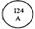

RÉSUMÉ DES CARACTÉRISTIQUES DU PRODUIT
ANSM - Mis à jour le : 25/09/2012
METOPROLOL ACCORD 50 mg, comprimé
2. COMPOSITION QUALITATIVE ET QUANTITATIVE
Chaque comprimé contient 50 mg de tartrate de métoprolol.
Pour la liste complète des excipients, voir rubrique 6.1.
Comprimés ronds, biconvexes, d’environ 8 mm, blancs à blanc cassé, marqués « 124 A » d’un côté et avec une barre de cassure de l’autre côté.
4.1. Indications thérapeutiques
· Prophylaxie des crises d’angor d’effort.
· Traitement de certains troubles du rythme : tachyarythmies, en particulier tachycardies supraventriculaires.
· Traitement au long court après un infarctus du myocarde.
· Prophylaxie de la migraine.
Le métoprolol est indiqué chez l’adulte.
4.2. Posologie et mode d'administration
Les comprimés de tartrate de métoprolol doivent être administrés par voie orale, à jeun.
La dose doit toujours être ajustée en fonction des besoins individuels du patient. Les posologies indiquées ci-dessous sont donnés à titre de recommandations.
Posologie
Hypertension
La dose normale est de 100 à 200 mg par jour, en une seule dose le matin ou en doses divisées matin et soir. Commencer le traitement avec 50 mg deux fois par jour ou 100 mg une seule fois par jour. Le dosage sera ensuite augmenté à intervalles hebdomadaires selon la réponse tensionnelle du patient. La dose maximale recommandée est généralement 200 mg/jour. Si nécessaire, le métoprolol peut être pris en association avec d’autres traitements antihypertenseurs.
Prophylaxie des crises d’angor d’effort
La dose normale est de 100 à 200 mg par jour, en doses divisées (matin et soir). Commencer le traitement avec 50 mg deux fois par jour. Le dosage sera ensuite augmenté à intervalles hebdomadaires selon la réponse individuelle du patient. La dose maximale recommandée est généralement 200 mg/jour (en doses divisées). Si nécessaire, le métoprolol peut être pris en association avec d’autres antiangineux.
Troubles du rythme
La dose normale est de 100 à 150 mg par jour, en doses divisées (matin et soir). Ce dosage peut être augmenté si nécessaire.
Traitement au long cours après Infarctus du myocarde
Traitement d’entretien : Commencer le traitement oral lorsque le patient est hémodynamiquement stable. La dose d’entretien est de 100 mg de métoprolol tartrate deux fois par jour (matin et soir).
Prophylaxie de la migraine
La dose normale est de 100 à 200 mg par jour, en doses divisées, matin et soir.
Populations particulières
Insuffisance rénale
Il n’est pas nécessaire d’ajuster la posologie chez les patients insuffisants rénaux.
Insuffisance hépatique
Il n’est généralement pas nécessaire de modifier la posologie chez les patients cirrhotiques car le métoprolol se lie faiblement aux protéines (5 à 10 %). Cependant, en cas de trouble hépatique grave, une réduction du dosage peut être nécessaire.
Patients âgés
Aucun ajustement de la posologie n’est nécessaire chez les patients âgés, mais il est recommandé de faire preuve de prudence car une baisse de tension ou une bradycardie excessive peuvent avoir des effets prononcés.
Enfants
L’expérience chez l’enfant étant limitée, le métoprolol tartrate n’est pas recommandé dans cette population.
· Hypersensibilité au principe actif, aux autres bétabloquants ou à l’un des excipients.
· Bloc auriculo-ventriculaire du second ou troisième degré.
· Patients avec une insuffisance cardiaque instable ou aigue décompensée (œdème pulmonaire, hypoperfusion ou hypotension), auquel cas un traitement inotrope intraveineux est indiqué.
· Patients recevant un traitement inotrope continu ou périodique agoniste des récepteurs béta.
· Bradycardie sévère (< 50 p/min).
· Maladie du sinus.
· Choc cardiogénique.
· Phénomène de Raynaud et trouble périphériques artériels périphériques, dans leurs formes sévères.
· Asthme ou antécédents de broncho-pneumopathies chroniques obstructives dans leurs formes sévères.
· Phéochromocytome non traité.
· Acidose métabolique.
· Administration intraveineuse concomitante d’inhibiteurs calciques, de vérapramil et de diltiazem, à cause du risque d’hypotension, de troubles de la conduction auriculo-ventriculaire (AV) ou d’insuffisance ventriculaire gauche.
· Hypotension.
· Angor de Prinzmetal (dans les formes pures et en monothérapie).
Le métoprolol est contre-indiqué chez les patients atteints d’un infarctus du myocarde et ayant une fréquence cardiaque < 50 p/minutes, un intervalle P-Q > 0,24 s ou une tension systolique < 100 mg Hg et/ou une insuffisance cardiaque congestive grave.
4.4. Mises en garde spéciales et précautions d'emploi
Même si le métoprolol, aux doses usuelles, a un effet négatif moins prononcé sur la musculature bronchique que les bétabloquants non sélectifs, on veillera à de tels troubles. Chez les patients traités au métoprolol pour un asthme bronchique, des bronchodilatateurs stimulant les récepteurs β2 comme la terbutaline pourront être prescrits si nécessaire. Si le patient prend déjà un stimulant des récepteurs β2, il est quelquefois nécessaire d’ajuster le dosage de ce dernier.
Etant donné que les bétabloquants peuvent avoir un effet sur le métabolisme du glucose, il convient d’être vigilant dans le cas de patients présentant un diabète sucré. L’effet sur le métabolisme du glucose et l’effet masquant sur les symptômes de l’hypoglycémie sont moins prononcés chez les patients traités par le métoprolol que chez ceux traités avec des bétabloquants non sélectifs (tachycardie en particulier).
Il est préférable de ne pas administrer de comprimés de METOPROLOL ACCORD aux patients atteints d’insuffisance cardiaque congestive non traitée – celle-ci devra d’abord être contrôlée. En cas de traitement concomitant avec la digoxine, il convient de noter que ces deux médicaments ralentissent la conduction AV et qu’il y a donc un risque de dissociation AV. Il peut également se produire des troubles cardiovasculaires légers se manifestant par des vertiges, une bradycardie et des évanouissements.
Lorsque le patient prend un bétabloquant, il peut survenir une détérioration sérieuse, quelquefois mortelle, de la fonction cardiaque, en particulier chez les sujets dont le bon fonctionnement du cœur dépend d’un soutien du système sympathique. Cela est dû à un effet bétabloquant excessif mais surtout au fait que les patients ayant des troubles cardiaques graves tolèrent mal une réduction de l’activité du système sympathique, même lorsque cette réduction est faible. Elle entraîne un affaiblissement de la contractilité et une réduction du rythme avec ralentissement de la conduction AV. Les conséquences peuvent être un œdème pulmonaire, un bloc AV et un choc. Quelquefois, un trouble préexistant de la conduction AV peut se détériorer, ce qui peut provoquer un bloc AV.
En cas d’aggravation d’une bradycardie, la posologie sera réduite ou le traitement progressivement arrêté.
Bien qu’il soit contre-indiqué dans le cas de troubles circulatoires artériels périphériques graves (voir rubrique 4.3), dans le cas de troubles circulatoires périphériques tels que la maladie de Raynaud ou d’artérites périphériques, le tableau clinique peut se détériorer, essentiellement par suite de l’effet hypotenseur du médicament. Si une telle détérioration se produisait, des bétabloquants ne devront être administrés qu’avec de grandes précautions.
Si METOPROLOL ACCORD est prescrit à un patient atteint de phéochromocytome, il sera nécessaire d’administrer également un alpha-bloquant.
Avant qu’un patient prenant du métoprolol subisse une opération, l’anesthésiste devra en être informé. Dans un tel cas, il n’est pas recommandé d’interrompre les bétabloquants. Eviter d’administrer des doses élevées de métoprolol à des patients devant subir une intervention non cardiaque, car des cas de bradycardie, d’hypotension et d’AVC, y compris fatals, chez des sujets présentant des facteurs de risques cardiovasculaires ont été observés.
Chez des patients prenant un bétabloquant, l’apparition d’un choc anaphylactique est plus sérieuse.
Les bétabloquants masquent certains des signes cliniques de la thyréotoxicose. Le métoprolol sera donc administré avec précaution chez de tels patients ou chez ceux pour lesquels une thyréotoxicose est suspectée, et la fonction thyroïdienne et le cœur seront étroitement surveillés.
L’administration d’adrénaline à des patients sous bétabloquants peut provoquer une augmentation de la tension et une bradycardie, bien que cela ait moins de risque de se produire avec des molécules béta1-[bloquantes] sélectives.
Les bétabloquants peuvent augmenter le nombre et la durée des attaques d’angine de poitrine chez les patients atteints d’angor de Prinzmetal (une variante de l’angor). Cependant, des béta1-bloquants cardiosélectifs comme le métoprolol peuvent être administrés à de tels patients dans les formes mineures et associés, mais sous surveillance étroite.
Les patients présentant un psoriasis connu par l’anamnèse ne doivent prendre des béta-bloquants qu’après une évaluation approfondie.
En cas de cirrhose du foie, la biodisponibilité du métoprolol peut augmenter.
En cas de diabète labile et insulinodépendant, il peut être nécessaire d’ajuster le traitement hypoglycémique.
Ne jamais administrer par voie IV des antagonistes du calcium de type vérapamil à des patients traités avec des bétabloquants.
Le traitement initial d’une hypertension artérielle maligne grave devra être conçu de manière à éviter une soudaine baisse de la tension diastolique avec altération des mécanismes autorégulateurs.
On a également noté une sécheresse oculaire soit seule soit parfois accompagnée d’éruptions cutanées. Dans la plupart des cas, ces symptômes ont disparu à l’arrêt du métoprolol. On examinera soigneusement les patients pour détecter tout effet oculaire potentiel, et dans un tel cas on envisagera l’arrêt du traitement.
4.5. Interactions avec d'autres médicaments et autres formes d'interactions
Le métoprolol est un substrat métabolique de l’isoenzyme CYP2D6 du cytochrome P450. Les médicaments ayant un effet promoteur ou inhibant sur les enzymes peuvent donc avoir un impact sur le taux plasmatique de métoprolol. Ce taux augmente en cas de prise concomitante de molécules métabolisées par PYP2D6 comme les antiarythmiques, les antihistamines, les antagonistes des récepteurs H2 de l’histamine, les antidépresseurs, les antipsychotiques, et les inhibiteurs de la COX-2. La rifampicine réduit la concentration plasmatique du métoprolol, l’alcool et l’hydralazine l’augmentent.
+ Antagonistes du calcium
En cas de prise concomitante d’antagonistes du calcium de type vérapamil ou diltiazem, il peut se produire une augmentation des effets inotropes et chronotropes négatifs. Des antagonistes calciques de type vérapamil ne doivent pas être injectés par voie IV à des patients traités avec des bétabloquants à cause du risque d’hypotension, de troubles de la conduction AV et d’insuffisance ventriculaire gauche (voir rubrique 4.3). Chez les insuffisants cardiaques, cette combinaison est contre-indiquée. Comme dans le cas d’autres béta-bloquants, un traitement concomitant avec des dihydropyridines (comme la nifédipine et l’amlodipine) peut augmenter le risque d’hypotension, et une insuffisance cardiaque peut apparaître chez des patients présentant une insuffisance cardiaques latente.
+ Agents bloquant les ganglions sympathiques ou autres bétabloquants
Les patients prenant en même temps des substances bloquant les ganglions sympathiques ou autres béta-bloquants (y compris en collyre) devront être surveillés en permanence.
+ Inhibiteurs de la MAO
Ces derniers devront être utilisés avec précaution car une association avec des bétabloquants peut entraîner une bradycardie et un effet hypotenseur renforcé. Il est recommandé de surveiller la pression artérielle et le rythme durant l’administration initiale.
+ Antihypertenseurs à action centrale (clonidine, guanfacine, moxonidine, méthyldopa, rilménidine)
Un arrêt brutal, en particulier avant d’arrêter les bétabloquants, peut augmenter le risque d’un « rebond » d’hypertension.
L’association clonidine-béta-bloquant non sélectif, et peut-être même avec un béta-bloquant sélectif, augmente ce risque d’hypertension de rebond. En cas d’administration concomitante de clonidine, celle-ci devra continuer à être prise pendant un certain temps après l’arrêt du métoprolol.
+ Antiarythmiques
La prudence est nécessaire en cas d’association avec certains antiarythmiques tels que dérivés de la quinidine ou de l’amiodarone et avec le propafénone, étant donné que les béta-bloquants peuvent intensifier les effets inotropes et dromotropes négatifs de ces substances.
La paroxétine peut augmenter la concentration plasmatique du métoprolol, entraînant l’accroissement des effets bétabloquants.
+ Ergotamine
Etant donné que les bétabloquants peuvent perturber la circulation périphérique, une vigilance accrue est recommandée en cas de co-administration de substances à activité similaire comme l’ergotamine.
+ Nitrates
Les nitrates peuvent renforcer l’effet hypotenseur du métoprolol.
+ Analgésiques morphiniques
Associés au métoprolol, ils peuvent entraîner une dépression de la fonction cardiaque.
+ Digitaliques
L’association à des glucosides cardiotoniques peut provoquer une bradycardie excessive et/ou une augmentation du temps de conduction auriculo-ventriculaire.
+ Parasympathomimétiques
L’association à ces substances peut provoquer une bradycardie prolongée.
+ Sympathicomimétiques
Le métoprolol contrarie l’effet b1 des sympathicomimétiques mais devrait avoir peu d’influence sur les effets bronchodilatateurs des agonistes b2 à des doses thérapeutiques normales. L’administration d’adrénaline (épinéphrine) à des patients sous bétabloquants peut entraîner une augmentation de la TA et une bradycardie, bien que cela soit plus rare avec des agents béta-1 sélectifs.
+ Anesthésiques inhalés
Une augmentation de l’effet cardiodépressif dû à l’inhalation concomitante d’anesthésiques est possible ; cependant, étant donné que les bétabloquants peuvent empêcher les fluctuations excessives de TA pendant que le patient est intubé et qu’ils sont rapidement antagonisés avec des sympathicomimétiques béta, une utilisation concomitante n’est pas contre-indiquée (voir rubrique 4.4).
+ Inhibiteurs de la prostaglandine-synthétase
L’utilisation avec l’indométacine ou d’autres inhibiteurs de la prostaglandine-synthétase peut réduire l’effet hypotenseur du métoprolol.
+ Insuline et antidiabétiques oraux
L’effet hypoglycémiant de l’insuline et autres hypoglycémiants oraux peut être intensifié par les bétabloquants, en particulier non sélectifs. Dans ce cas, le dosage de l’hypoglycémiant oral devra être ajusté.
+ Alpha-bloquants tels que prazosine, tamsulosine, térazosine, doxazosine
Ils augmentent le risque d’hypotension, en particulier orthostatique grave.
+ AINS
La prise concomitante d’anti-inflammatoires non stéroïdiens tels que l’indométhacine peut diminuer l’effet antihypertenseur du métoprolol.
+ Floctafénine
Les bétabloquants peuvent gêner les réactions cardiovasculaires compensatoires associées à l’hypotension ou au collapsus qui peuvent être induits par la floctafénine.
+ Relaxants des muscles squelettiques
Les myorelaxants curarisants associés au métoprolol renforcent le blocage neuromusculaire, tandis que le baclofène augmente le risque d’hypotension orthostatique en particulier. On surveillera la pression artérielle et on ajustera la posologie de l’antihypertenseur si nécessaire.
+ Lidocaïne
Le métoprolol peut réduire la clairance de la lidocaïne.
+ Inducteurs/inhibiteurs de l’enzyme hépatique
Les agents inducteurs de cette enzyme (rifampicine p.ex.) peuvent réduire les taux plasmatiques de métoprolol, tandis que les inhibiteurs (cimétidine p.ex.) peuvent les augmenter.
+ Méfloquine
Risque augmenté de bradycardie.
+ Antiacides
Provoquent une augmentation de la concentration plasmatique en métoprolol.
Les effets du métoprolol et d’autres antihypertenseurs sur la pression artérielle sont généralement additifs. Il faudra donc être vigilant lorsqu’on le combinera à d’autres antihypertenseurs ou à des médicaments qui pourraient réduire la pression artérielle tels que les antidépresseurs tricycliques, les barbituriques et les phénothiazines. Cependant, de telles combinaisons d’antihypertenseurs peuvent souvent se révéler bénéfiques dans le contrôle de l’hypertension.
Les études chez l’animal n’ont mis en évidence aucun effet tératogène aux concentrations cliniquement pertinentes.
Les bétabloquants réduisent la perfusion placentaire, ce qui peut entraîner la mort du fœtus et des naissances immatures ou prématurées, mais à ce jour aucune étude prospective n’a mis en évidence une augmentation du risque de défauts congénitaux chez l’homme. Le métoprolol traverse le placenta et est présent dans le sang du cordon, mais aucune preuve d’anomalie fœtale n’a été signalée.
A titre de précaution, il est préférable d’éviter la prise de métoprolol durant la grossesse. Néanmoins, il a été utilisé sous étroite surveillance contre l’hypertension associée à une grossesse après 20 semaines de gestation. Cependant, chez les nouveau-nés des mères traitées, les effets pharmacologiques des bétabloquants peuvent persister pendant plusieurs jours après la naissance et provoquer bradycardie, hypoglycémie et détresse respiratoire. En conséquence, si l’on doit prescrire du métoprolol vers la fin de la grossesse, il faudra surveiller étroitement les effets indésirables possibles sur le fœtus et le nouveau-né (en particulier bradycardie, hypoglycémie et hypotension) durant les premiers jours après la naissance.
Des cas d’hypoglycémie et de bradycardie ont été décrits chez le nouveau-né avec des bétabloquants se liant faiblement aux protéines plasmatiques. Le métoprolol est excrété dans le lait humain. Bien que sa concentration dans celui-ci soit très faible, l’allaitement devra être interrompu pendant le traitement au métoprolol. En cas de prise durant l’allaitement, on surveillera le bébé pour détecter tout symptôme de blocage béta.
4.7. Effets sur l'aptitude à conduire des véhicules et à utiliser des machines
Les définitions d’incidence suivantes ont été utilisées : très fréquent ( ≥ 1/10), fréquent ( ≥ 1/100), peu fréquent ( ≥ 1/1000), rare ( ≥ 1/10 000, < 1/1000) et très rare ( < 1/10 000). Les données ci-dessous comprennent également les cas isolés.
Classe de système/ d’organe |
Très fréquent (> 1/10) |
fréquent (≥ 1/100 à <1/10) |
Peu fréquent (≥ 1/1000 à <1/100) |
Rare (≥ 1/10 000 à < 1/1000) |
Très rare (< 1/10 000) |
|
Affections du sang et du système lymphatique |
|
|
|
|
Thrombocytopénie, agranulocytose |
|
Affections du métabolisme et de la nutrition |
|
|
Prise de poids |
|
Augmentation des VLDL, baisse des HDL, aggravation de l’hypoglycémie induite par l’insuline |
|
Affections psychiatriques |
|
|
Dépression, baisse de la vigilance, somnolence ou insomnie, cauchemars |
Nervosité, anxiété, impuissance |
Amnésie/ troubles de la mémoire, confusion, hallucinations, dépersonnalisation |
|
Affections du système nerveux |
Fatigue |
Vertiges, céphalées |
Paresthésie, faiblesse musculaire et crampes |
|
|
|
Affections de la vision |
|
|
|
Vision trouble, sécheresse et/ou irritation des yeux, conjonctivite |
|
|
Affections des oreilles et du labyrinthe |
|
|
|
|
Acouphènes, surdité réversible |
|
Affections cardiaques |
|
Bradycardie hypotension et troubles posturaux (très rarement accompagnés de syncope), palpitations, |
Détérioration d’une insuffisance cardiaque, choc cardiogénique chez des patients en infarctus du myocarde aigu*, bloc AV du premier degré, œdème et douleurs péricardiques |
Troubles de la conduction, divers types d’arythmies |
|
|
Affections vasculaires |
|
Mains et pieds froids Phénomène de Raynaud |
|
|
Gangrène chez des patients atteints de troubles circulatoires périphériques graves |
|
Affections respiratoires, thoraciques et médiastinales |
|
Dyspnée après un effort physique |
Bronchospasme, y compris chez des patients sans troubles pulmonaires obstructifs |
Rhinite |
|
|
Affections gastro-intestinales |
|
Nausées, douleurs abdominales, diarrhée, constipation |
Vomissements |
Bouche sèche |
|
|
Affections hépatobiliaires |
|
|
|
Anomalies du test de la fonction hépatique |
Hépatite |
|
Affections de la peau et des tissus sous-cutanés |
|
|
Rash (urticaire, lésions psoriasiques oudystrophiques de la peau), sudation excessive |
Chute des cheveux réversible |
Photosensibilité, détérioration d’un psoriasis préexistant |
|
Affections musculo-squelettiques et des tissus conjonctifs |
|
|
|
|
Arthralgie |
|
Affections de l’appareil reproducteur et des seins |
|
|
|
Troubles de la libido et de l’érection |
Maladie de La Peyronie |
|
Troubles généraux et au site d’administration |
|
|
|
|
Dysgueusie (troubles du goût) |
* Fréquence excessive de 0,4% par rapport à un placebo observée lors de l’essai COMMIT portant sur 46000 patients atteints d’un infarctus aigu du myocarde, chez lesquels la fréquence d’un choc cardiogénique était de 2,3 % chez les patients prenant du métoprolol (jusqu’à 15 mg par voie IV puis 200 mg par voie orale) et de 1,9 % dans le groupe placebo dans le sous-groupe de patients à faible index de risque de choc. Cet index était basé sur le risque absolu de choc pour chaque patient individuel basé sur l’âge, le sexe, le délai, la classe Killip, la pression artérielle, le rythme cardiaque, les anomalies de l’ECG et les antécédents d’hypertension. Le groupe de patients à faible index de risque de choc correspond à ceux pour lesquels le métoprolol est recommandé en cas d’infarctus aigu du myocarde.
Expérience post-commercialisation
Les réactions indésirables suivantes ont été signalées après la mise sur le marché : confusion mentale, augmentation des triglycérides sanguins et diminution des HDL. Etant donné qu’il s’agit d’une population de taille incertaine et que ces cas comportent des facteurs portant à confusion, il n’est pas possible d’estimer leur fréquence de manière fiable.
Les symptômes de surdosage peuvent comprendre bradycardie, hypotension, insuffisance cardiaque aiguë et bronchospasme.
Le traitement comprendra en général une surveillance étroite, un traitement en soins intensifs, un lavage gastrique, la prise de charbon activé et d’un laxatif pour empêcher l’absorption de toute quantité du médicament encore présente dans l’appareil gastro-intestinal, l’injection de plasma ou de substituts pour traiter l’hypotension et le choc.
Une bradycardie excessive pourra être contrée avec 1 à 2 mg d’atropine IV et/ou un pacemaker. Si nécessaire, on injectera par la suite un bolus de 10 mg de glucagon par voir IV. Si nécessaire, ce bolus pourra être répété ou suivi d’une perfusion de 1 à 10 mg/heure de glucagon selon la réponse. S’il n’y a pas de réponse au glucagon ou s’il n’est pas disponible, un stimulant des récepteurs béta-adrénergiques (dobutamine, isoprénaline, noradrénaline) peut être utilisé. La dobutamine peut être administrée à raison de 2,5 à 10 microgrammes/kg/minute par voie IV.
A cause de son action inotrope positive, la dobutamine peut également être utilisée pour traiter l’hypotension et l’insuffisance cardiaque aigue. Il est probable que ce dosage serait insuffisant pour annuler l’effet du blocage béta sur le cœur causé par la prise d’une très forte dose. On augmentera donc la dobutamine si nécessaire afin d’obtenir la réponse requise en fonction de l’état du patient.
L’administration d’ions calcium peut aussi être envisagée. Le bronchospasme peut généralement être inversé à l’aide de bronchodilatateurs.
5. PROPRIETES PHARMACOLOGIQUES
5.1. Propriétés pharmacodynamiques
Classe pharmacothérapeutique : bétabloquant sélectif
Code ATC : C07AB02
Le métoprolol est un bétabloquant b1-sélectif compétitif : il bloque les récepteurs b1 à des doses bien plus faibles que celles nécessaires pour bloquer les récepteurs b2.
A cause de ces propriétés, le métoprolol convient pour le traitement de l’hypotension, de l’angor, de divers types d’arythmie et de l’insuffisance cardiaque congestive modérée à grave chez des patients atteints de myocardiopathie dilatée idiopathique, ainsi que pour prévenir la réapparition d’un infarctus et donc réduire la mortalité chez des patients ayant déjà fait un infarctus et présentant un risque considérable de nouvel infarctus ou de mort cardiaque subite.
Le métoprolol a un effet stabilisant de membrane non significatif et ne manifeste pas d’activité agoniste partielle. Il réduit ou inhibe l’effet agoniste des catécholamines sur le cœur. Ces dernières sont libérées en cas de stress physique ou mental. Cela signifie que l’augmentation usuelle du rythme, du débit cardiaque, de la contractilité et de la pression artérielle causée par une forte augmentation du taux de catécholamines est réduite par le métoprolol. En présence de taux élevés d’adrénaline endogène, le métoprolol interfère beaucoup moins avec le contrôle de la TA que les bétabloquants non sélectifs. Il a moins d’effet sur la libération d’insuline et sur le métabolisme des hydrates de carbone que ces bétabloquants non sélectifs. Egalement, le métoprolol agit moins sur la réaction cardiovasculaire à l’hypoglycémie que ces bétabloquants non sélectifs. Des études à court terme ont montré que le métoprolol peut légèrement augmenter les taux de triglycérides et abaisser ceux d’acides gras libres dans le sang. On a observé dans quelques cas une légère réduction de la fraction HDL, cependant également moins prononcée que dans le cas des bétabloquants non sélectifs.
5.2. Propriétés pharmacocinétiques
Après prise orale, le métoprolol est totalement absorbé. A l’intérieur de la fenêtre thérapeutique, les concentrations plasmatiques augmentent de manière linéaire en fonction du dosage. Les taux plasmatiques maxima sont atteints après environ 1,5 à 2 heures. Même si le profil plasmatique présente une assez grande variabilité entre individus, cela semble être généralement reproductible. Par suite du métabolisme important en première passe, la biodisponibilité après une dose orale unique est d’environ 50 %. Après des doses répétées, la biodisponibilité de la dose augmente pour atteindre environ 70 %. Après une prise pendant les repas, la biodisponibilité d’une dose orale augmente d’environ 30 à 40 %.
Distribution
La molécule se lie d’environ 5 à 10 % aux protéines plasmatiques.
Métabolisme et élimination
Le métoprolol est métabolisé par oxydation dans le foie, essentiellement par l’isoenzyme CYP2D6. Si trois métabolites principaux ont été identifiés, aucun d’entre eux n’a d’effet bétabloquant significatif. Généralement, 95 % d’une dose orale se retrouvent dans les urines. Seuls 5 % de la dose sont excrétés intacts à travers les reins ; dans des cas isolés, ce chiffre peut atteindre 30 %. La demi-vie d’élimination du métoprolol est en moyenne de 3,5 heures (avec des extrêmes allant de 1 à 9 heures). La clairance totale est d’environ 1 litre/minute.
Populations spéciales
Personnes âgées
Par rapport à des patients plus jeunes, la pharmacocinétique du métoprolol administré à des personnes âgées ne présente pas de différences significatives.
Insuffisants rénaux
L’insuffisance rénale n’a pratiquement pas d’effet sur la biodisponibilité du métoprolol. Cependant, l’excrétion des métabolites est réduite. Chez des patients ayant un taux de filtration glomérulaire < 5 ml/minute, on a observé une accumulation importante de métabolites. Cependant, cette accumulation n’entraîne pas d’augmentation du blocage béta.
Insuffisants hépatiques
La pharmacocinétique du métoprolol n’est modifiée que de manière minime par une réduction de la fonction hépatique. Cependant, chez des patients atteints d’une cirrhose grave et d’une anastomose porto-cave, la biodisponibilité du métoprolol peut augmenter et la clairance totale diminuer. Des patients avec une anastomose porto-cave avaient une clairance totale d’environ 0,3 litres/minute et des valeurs AUC 6 fois plus élevées que chez un sujet sain.
5.3. Données de sécurité préclinique
6.4. Précautions particulières de conservation
A conserver à une température ne dépassant pas 25ºC.
6.5. Nature et contenu de l'emballage extérieur
10, 20, 28, 30, 50, 56, 60, 84 et 90 comprimés sous plaquettes (PVC/Aluminium).
Toutes les présentations peuvent ne pas être commercialisées.
6.6. Précautions particulières d’élimination et de manipulation
Pas d'exigences particulières.
Tout produit non utilisé ou déchet doit être éliminé conformément à la réglementation en vigueur.
7. TITULAIRE DE L’AUTORISATION DE MISE SUR LE MARCHE
accord healthcare France sas
45, rue du Faubourg de Roubaix
59000 lille
8. NUMERO(S) D’AUTORISATION DE MISE SUR LE MARCHE
· 223 230-6 ou 34009 223 230 6 0 : 10 comprimés sous plaquettes (PVC/Aluminium)
· 223 231-2 ou 34009 223 231 2 1 : 20 comprimés sous plaquettes (PVC/Aluminium)
· 223 232-9 ou 34009 223 232 9 9 : 28 comprimés sous plaquettes (PVC/Aluminium)
· 223 233-5 ou 34009 223 233 5 0 : 30 comprimés sous plaquettes (PVC/Aluminium)
· 223 234-1 ou 34009 223 234 1 1 : 50 comprimés sous plaquettes (PVC/Aluminium)
· 223 235-8 ou 34009 223 235 8 9 : 56 comprimés sous plaquettes (PVC/Aluminium)
· 223 236-4 ou 34009 223 236 4 0 : 60 comprimés sous plaquettes (PVC/Aluminium)
· 223 237-0 ou 34009 223 237 0 1 : 84 comprimés sous plaquettes (PVC/Aluminium)
· 223 238-7 ou 34009 223 238 7 9 : 90 comprimés sous plaquettes (PVC/Aluminium)
9. DATE DE PREMIERE AUTORISATION/DE RENOUVELLEMENT DE L’AUTORISATION
[à compléter par le titulaire]
10. DATE DE MISE A JOUR DU TEXTE
[à compléter par le titulaire]
Sans objet.
12. INSTRUCTIONS POUR LA PREPARATION DES RADIOPHARMACEUTIQUES
Sans objet.
Liste I.